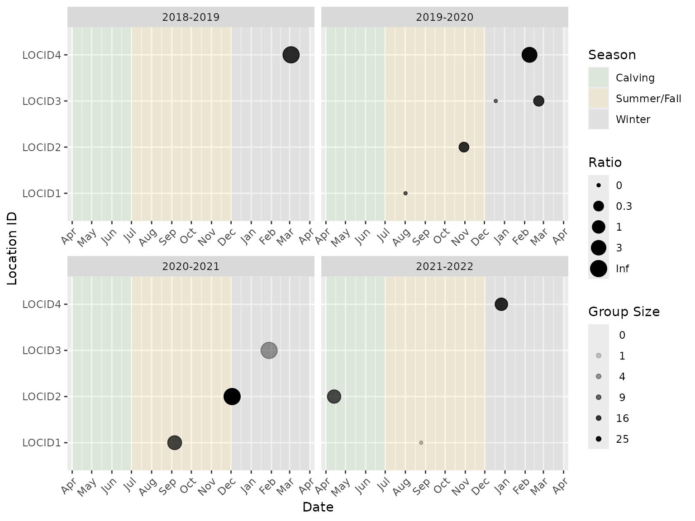
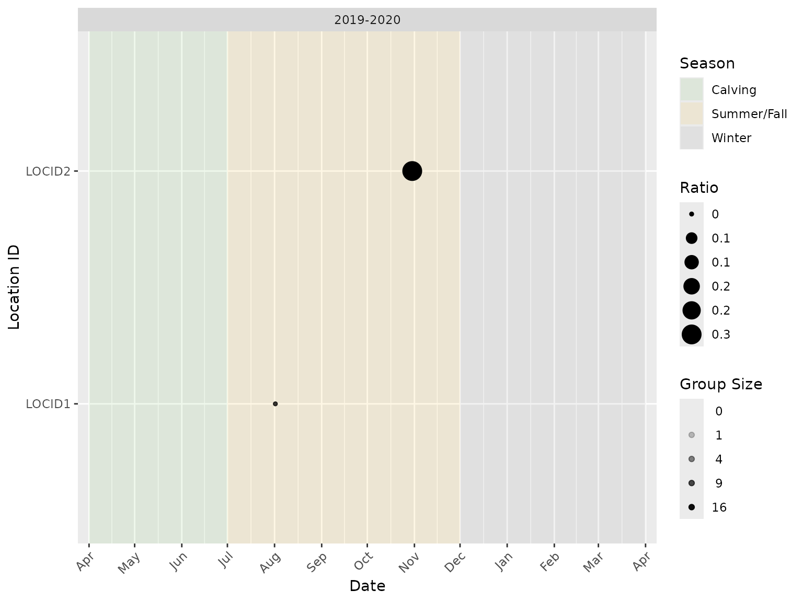
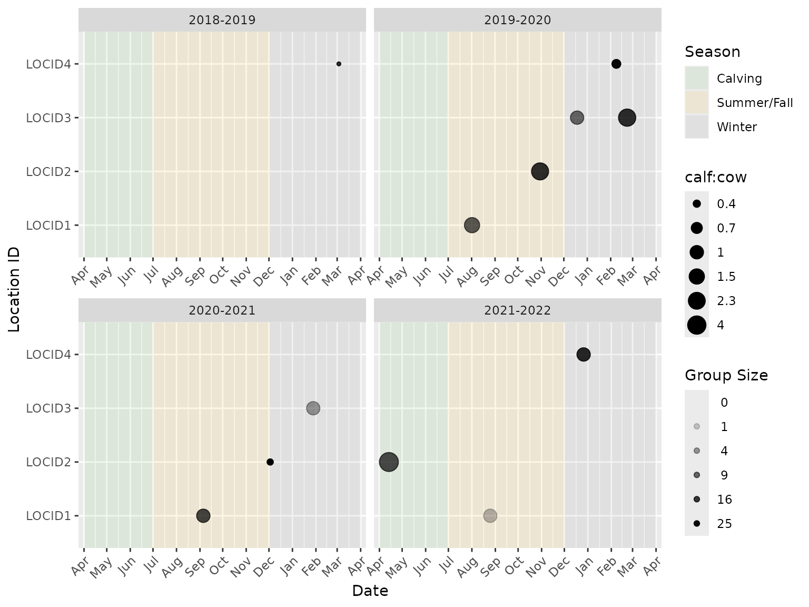
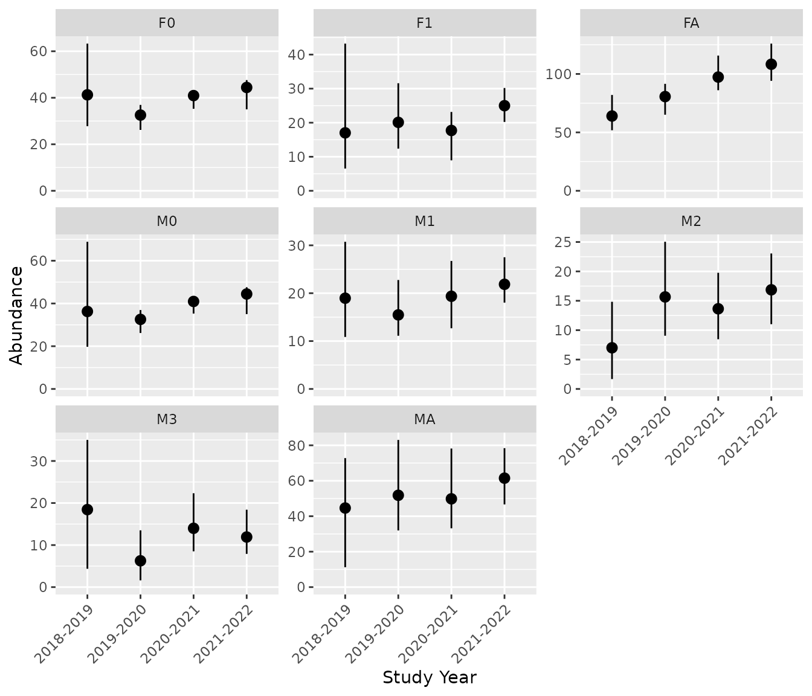
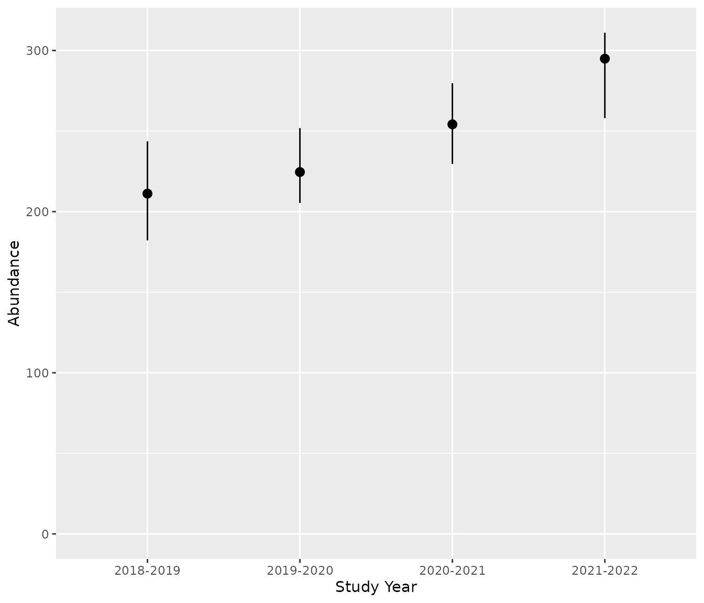
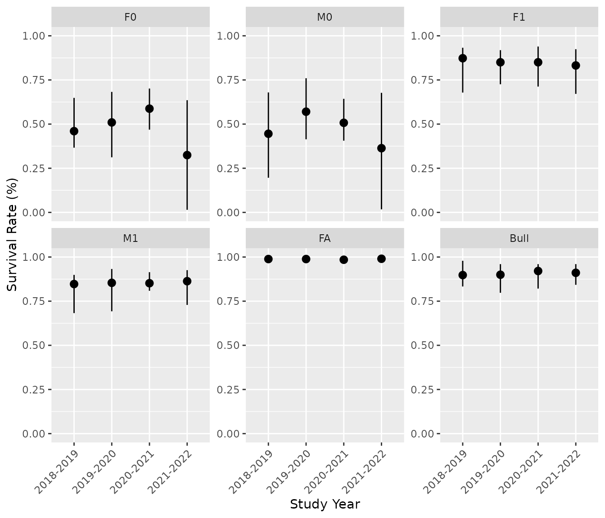
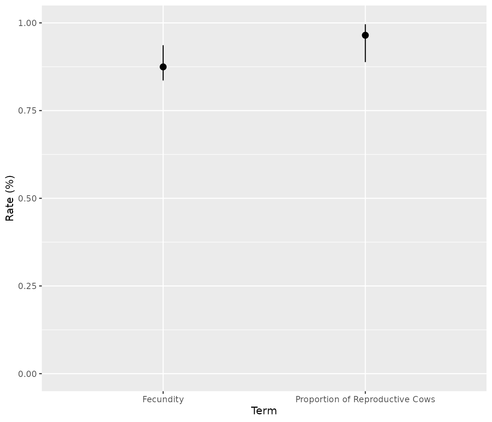
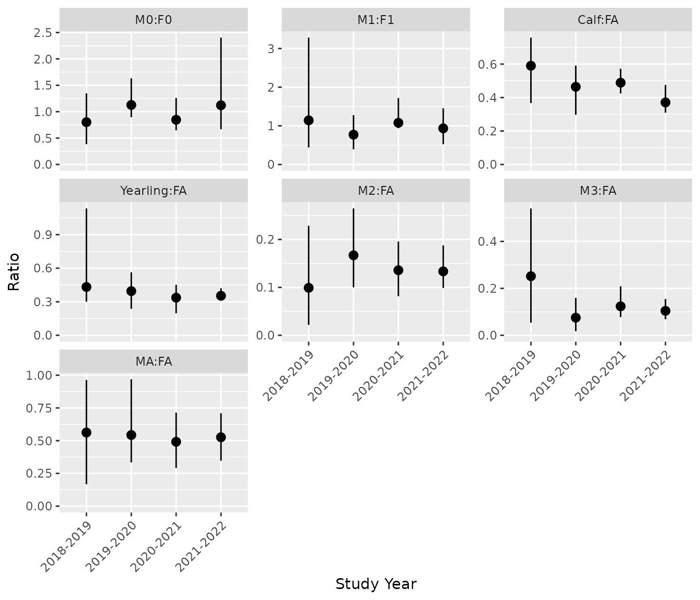

Getting Started with bisonpictools
Source:vignettes/bisonpictools-getting-started.Rmd
bisonpictools-getting-started.Rmdbisonpictools is an R package to facilitate the
visualization and analysis of camera trap data for wood bison herds. The
package includes functions to check the correct formatting of data,
visualize the data, manipulate and analyse the data using a complex
custom-built Bayesian model, and generate and plot predictions of
abundances, survival and fecundity rates, and population ratios.
Installation
To install the latest development version of
bisonpictools, execute the following code in the RStudio
console.
install.packages("remotes")
remotes::install_github("poissonconsulting/bisonpictools")bisonpic Suite
bisonpictools is part of the bisonpic suite of tools.
Other packages in this suite include:
Getting Help
To get additional information on a particular function just type
? followed by the name of the function in the R console.
For example, ?bpt_analyse() brings up the R documentation
for the bisonpictools analysis function.
For more information on using R the reader is referred to R for Data Science (Wickham and Grolemund 2016).
If you discover a bug in bisonpictools please file an issue
with a reprex (reproducible
example).
Data
The easiest way to prepare the data for use with the
bisonpictools functions is to download the templated excel
spreadsheet from the shinybisonpic
website. Click the Download Template button, and
populate each sheet with your data.
-
event_datacontains the camera trap event data, including the date and time of each event, location of the camera trap, and the number of individuals in each class -
location_datacontains the coordinates of the camera traps -
census_datacontains population estimates of the population from aerial surveys, and the date of the surveys- specifically, this should be an estimate of the entire population size, not a minimum count
-
proportion_calf_datacontains estimates of the proportion of calves in the population from aerial surveys, and the date of the surveys
Data Visualization
Using the RStudio Console
Functions from bisonpictools can be run in the RStudio
console. The bpt_plot_ratios() function plots the ratios of
various sex-age classes over time. The user needs to provide the event
and location data, as well as vectors of classes to form the numerator
and denominator of the ratio.
(1) Read in data from the populated excel template
# Change `dir` to the file path of the populated excel template on your computer
dir <- "myfilepath.xlsx"
# Install readxl to read the excel spreadsheet into R
remotes::install_github("readxl")
# Read each sheet into R
location_data <- readxl::read_xlsx(dir, sheet = "location")
event_data <- readxl::read_xlsx(dir, sheet = "event")
census_data <- readxl::read_xlsx(dir, sheet = "census")
proportion_calf_data <- readxl::read_xlsx(dir, sheet = "proportion_calf")(2) Produce ratio plots
Data checks are completed before the analysis is run to ensure they are in the correct format. In the plot, each point represents an event. The size (area) of the point indicates the ratio while the opacity of the point indicates the number of individuals in the group.
Note that a ratio value of “Inf” (infinity) indicates that the group in a particular camera trap event has no individuals in the denominator class. For example, if plotting the calf:cow ratio, a ratio value of “Inf” would represent an event with one or more calves and no cows. Similarly, a ratio of “0” indicates that the ratio in a particular camera trap event has no individuals in the numerator class. For the calf:cow ratio example, this would represent an event with one or more cows and no calves.
For example, the female calf:male calf ratio plotted over all years and locations from example data:
library(bisonpictools)
bpt_plot_ratios(
event_data,
location_data,
numerator = "f0",
denominator = "m0"
)
It is also possible to subset the data to include one or more camera trap locations and/or study years:
bpt_plot_ratios(
event_data,
location_data,
numerator = "f0",
denominator = "m0",
study_years = "2019-2020",
locations = c("LOCID1", "LOCID2")
)
Several age/sex classes can be combined to plot ratios of interest. For example, the next code chunk plots the calf:(cow + calf) ratio.
The label for the ratio legend can be changed from the default
(“Ratio”), to more specific label, using the ratio_name
argument.
bpt_plot_ratios(
event_data,
location_data,
numerator = c("f0", "m0", "u0"),
denominator = c("fa"),
ratio_name = "calf:cow"
)
shinybisonpic
The shinybisonpic
Shiny app can be used to explore the locations of camera traps and
the the ratios of different classes of wood bison in camera trap
observations in a user-friendly manner. Refer to the user
guide for more information on how to use the
shinybisonpic app.
Data Analysis
Using the RStudio Console
(1) Read in data from the populated excel template
# Change `dir` to the file path of the populated excel template on your computer
dir <- "myfilepath.xlsx"
# Install readxl to read the excel spreadsheet into R
remotes::install_github("readxl")
# Read each sheet into R
location_data <- readxl::read_xlsx(dir, sheet = "location")
event_data <- readxl::read_xlsx(dir, sheet = "event")
census_data <- readxl::read_xlsx(dir, sheet = "census")
proportion_calf_data <- readxl::read_xlsx(dir, sheet = "proportion_calf")(2) Run the analysis
This uses the bpt_analyse() function. Data checks are
completed before the analysis is run to ensure they are in the correct
format. Informative error messages will print to the console if the data
do not follow the required format. The following arguments control the
number of MCMC chains, number of iterations, and the thinning rate of
the model:
-
analysis_modecontrols the number of iterations and chains in the model run:-
"debug"is used for printing out the errors if the model does not sample (10 iterations from 2 chains), -
"quick"is used for running through a quick run of the model for demonstration purposes (10 iterations from 2 chains), -
"report"is the default and is used for the full analysis (500 iterations from 3 chains).
-
-
nthincontrols the thinning of the MCMC samples:-
nthin = 1Lsaves every sample; use this for"debug"and"quick"modes, -
nthin = 10Lsaves every sample, and is the detault; use this for"report"mode, - increase
nthinby 5 if the model does not converge in “report” mode.
-
It is recommended to:
- Run the model in
analysis_mode = "quick"mode with a thinning rate ofnthin = 1Lto ensure the model samples correctly. - If there were no errors in step 1, proceed by running the model in
analysis_mode = "report"with a thinning rate ofnthin = 10L, to achieve convergence. Ensure the table output by the model hasTRUEin the “converged” column. If the model did not converge, increasenthinby 5, and re-run the model. - If there were errors in step 1, proceed instead by running the model
in
analysis_mode = "debug"with a thinning rate ofnthin = 1Lto print informative error messages.
# Start by running once on "quick" mode, with a thinning rate of 1
analysis <- bpt_analyse(
event_data = event_data,
location_data = location_data,
census_data = census_data,
proportion_calf_data = proportion_calf_data,
nthin = 1L,
analysis_mode = "quick"
)
# If no errors appear, run the model on "report" mode, with a thinning rate of 10
analysis <- bpt_analyse(
event_data = event_data,
location_data = location_data,
census_data = census_data,
proportion_calf_data = proportion_calf_data,
nthin = 10L,
analysis_mode = "report"
)
# If errors do appear, run the model on "debug" mode, which will provide
# informative error messages
analysis <- bpt_analyse(
event_data = event_data,
location_data = location_data,
census_data = census_data,
proportion_calf_data = proportion_calf_data,
nthin = 1L,
analysis_mode = "debug"
)(3) Check that the model converged
In "quick" or "debug" mode, convergence is
not expected. In "report" mode, convergence is expected.
See the converged column in the table printed after
bpt_analyse() is run to assess whether or not the analysis
converged. If it says TRUE, the model converged. If it says
FALSE, the model did not converge.
This is an example of a model run in “quick” mode that did not
converge (i.e., the “converged” column reads FALSE).
#> # A tibble: 1 × 8
#> n K nchains niters nthin ess rhat converged
#> <int> <int> <int> <int> <int> <int> <dbl> <lgl>
#> 1 11 57 2 10 1 7 1.97 FALSE(4) Coefficient table
Use the bpt_coefficient_table() function to print out
the estimated parameters from the model run.
coef <- bpt_coefficient_table(analysis)
print(coef)
#> # A tibble: 57 × 5
#> term estimate lower upper svalue
#> <term> <dbl> <dbl> <dbl> <dbl>
#> 1 bEtaSummerFall 0.232 0.00955 0.753 4.39
#> 2 bEtaWin 0.101 0.00114 0.484 4.39
#> 3 bFecundityReproductiveFA 1.94 1.63 2.69 4.39
#> 4 bInitialMortalityCalfAnnual[1] -3.75 -5.78 -2.12 4.39
#> 5 bInitialMortalityCalfAnnual[2] -4.56 -7.45 -2.35 4.39
#> 6 bInitialMortalityCalfAnnual[3] -2.87 -7.46 -1.60 4.39
#> 7 bInitialMortalityCalfAnnual[4] -1.09 -6.11 3.64 0.485
#> 8 bKmWeekSummerFall 2.22 0.266 4.42 4.39
#> 9 bKmWeekWin 1.93 1.21 2.63 4.39
#> 10 bMAProportion[1] 0.440 0.258 0.582 4.39
#> # ℹ 47 more rows(5) Save the analysis object
Ensure that the analysis object is saved once the model finishes
running. The bpt_save_analysis() function saves the
analysis to the desired file path.
# Save the analysis object.
# Change the file path to the desired directory (does not require a file extension)
bpt_save_analysis(analysis, file = "file_path/analysis")To load the analysis object back into R, use the complimentary
function, bpt_load_analysis(), using the same file path it
was saved to above.
# Load analysis object if not still in the environment, using the same file path
# it was saved to in step (4) above.
analysis <- bpt_load_analysis("file_path/analysis")(6) Make predictions
Predictions of the stage-wise and total abundances, survival and
fecundity rates, and select ratios are derived from the posterior
distributions of the estimated parameters. Use the functions with the
bpt_predict prefix to generate the predictions.
# Predict total abundance
bpt_predict_abundance_total(analysis)
#> # A tibble: 4 × 4
#> annual estimate lower upper
#> <fct> <dbl> <dbl> <dbl>
#> 1 2018-2019 211. 182. 244.
#> 2 2019-2020 225. 205. 252.
#> 3 2020-2021 254. 230. 280.
#> 4 2021-2022 295. 258. 311.
# Predicts abundance by class:
bpt_predict_abundance_class(analysis)
#> # A tibble: 32 × 5
#> annual class estimate lower upper
#> <fct> <chr> <dbl> <dbl> <dbl>
#> 1 2018-2019 F0 41.3 27.8 63.3
#> 2 2019-2020 F0 32.6 26.2 36.9
#> 3 2020-2021 F0 40.9 35.3 43.0
#> 4 2021-2022 F0 44.4 35.0 47.6
#> 5 2018-2019 F1 17.0 6.53 43.2
#> 6 2019-2020 F1 20.1 12.4 31.6
#> 7 2020-2021 F1 17.7 8.95 23.2
#> 8 2021-2022 F1 25.0 20.2 30.2
#> 9 2018-2019 FA 64.0 51.8 82.0
#> 10 2019-2020 FA 80.6 65.1 91.5
#> # ℹ 22 more rows
# Predicts survival rates by class:
bpt_predict_survival(analysis)
#> # A tibble: 24 × 5
#> annual class estimate lower upper
#> <fct> <fct> <dbl> <dbl> <dbl>
#> 1 2018-2019 F0 0.460 0.366 0.648
#> 2 2019-2020 F0 0.510 0.312 0.682
#> 3 2020-2021 F0 0.587 0.469 0.701
#> 4 2021-2022 F0 0.324 0.0146 0.635
#> 5 2018-2019 M0 0.445 0.196 0.679
#> 6 2019-2020 M0 0.570 0.414 0.760
#> 7 2020-2021 M0 0.507 0.406 0.643
#> 8 2021-2022 M0 0.364 0.0174 0.677
#> 9 2018-2019 F1 0.873 0.679 0.932
#> 10 2019-2020 F1 0.850 0.726 0.919
#> # ℹ 14 more rows
# Predicts fecundity rate and proportion of reproductive cows:
bpt_predict_fecundity(analysis)
#> # A tibble: 2 × 4
#> rate estimate lower upper
#> <chr> <dbl> <dbl> <dbl>
#> 1 Fecundity 0.875 0.836 0.936
#> 2 Proportion of Reproductive Cows 0.965 0.888 0.996
# Predicts population ratios:
bpt_predict_ratios(analysis)
#> # A tibble: 28 × 5
#> annual ratio estimate lower upper
#> <fct> <fct> <dbl> <dbl> <dbl>
#> 1 2018-2019 M0:F0 0.802 0.384 1.35
#> 2 2019-2020 M0:F0 1.13 0.895 1.63
#> 3 2020-2021 M0:F0 0.847 0.647 1.26
#> 4 2021-2022 M0:F0 1.12 0.668 2.40
#> 5 2018-2019 M1:F1 1.14 0.439 3.28
#> 6 2019-2020 M1:F1 0.771 0.393 1.28
#> 7 2020-2021 M1:F1 1.08 0.938 1.72
#> 8 2021-2022 M1:F1 0.935 0.523 1.45
#> 9 2018-2019 Calf:FA 0.590 0.367 0.758
#> 10 2019-2020 Calf:FA 0.464 0.297 0.591
#> # ℹ 18 more rows(7) Plot Predictions
The bpt_plot_predictions() function can be used to
visualize the predictions.
# Plot predicted abundances by class
bpt_plot_predictions(analysis, prediction = "abundance-class")
# Plot total abundance
bpt_plot_predictions(analysis, prediction = "abundance-total")
# Plot survival rates
bpt_plot_predictions(analysis, prediction = "survival")
# Plot fecundity rates
bpt_plot_predictions(analysis, prediction = "fecundity")
# Plot ratios
bpt_plot_predictions(analysis, prediction = "ratios")
runbisonpic
Alternatively, launch the local data analysis app by running the following lines of code in the RStudio console.
# Install `runbisonpic`
remotes::install_github("poissonconsulting/runbisonpic")
# Launch local app
runbisonpic::launch_runbisonpic()See the user
guide for more guidance on how to use the runbisonpic
app.
Going beyond bisonpictools
The analysis object is a list that contains the model code, mcmc
samples (class mcmcr), and other meta-data used to fit the
model. The user can interact directly with the mcmc samples using
packages such as mcmcr
and mcmcderive
to derive other quantities of interest.
References
Licensing
Copyright 2023 Province of Alberta
Licensed under the Apache License, Version 2.0 (the “License”); you may not use this file except in compliance with the License. You may obtain a copy of the License at
http://www.apache.org/licenses/LICENSE-2.0
Unless required by applicable law or agreed to in writing, software distributed under the License is distributed on an “AS IS” BASIS, WITHOUT WARRANTIES OR CONDITIONS OF ANY KIND, either express or implied. See the License for the specific language governing permissions and limitations under the License.